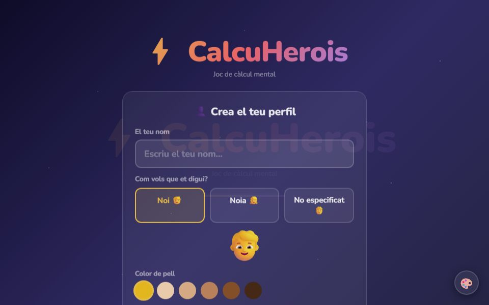
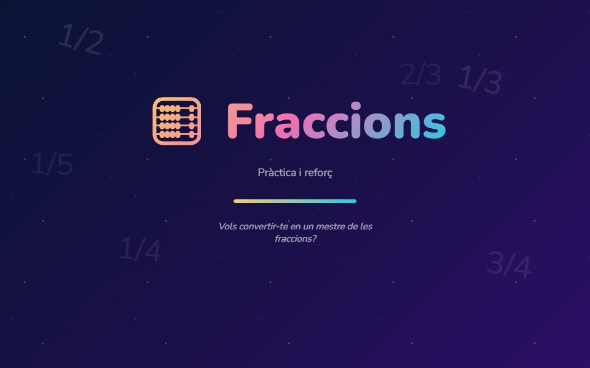
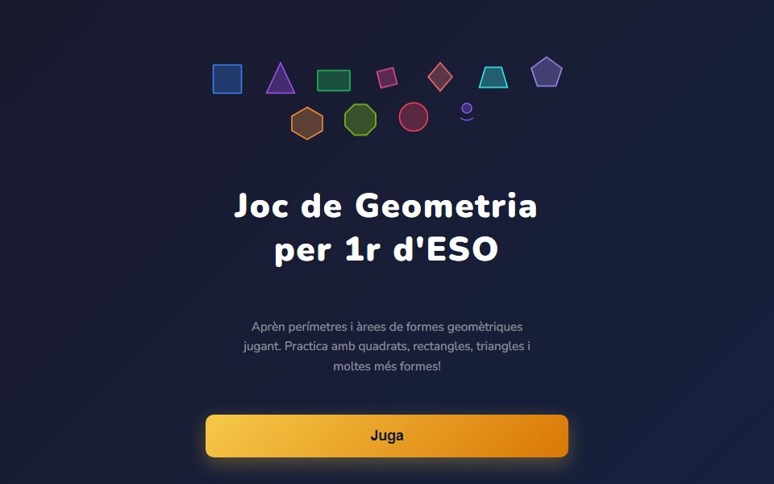
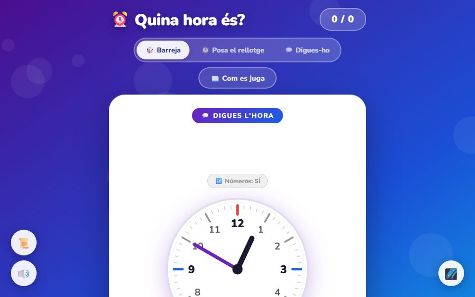
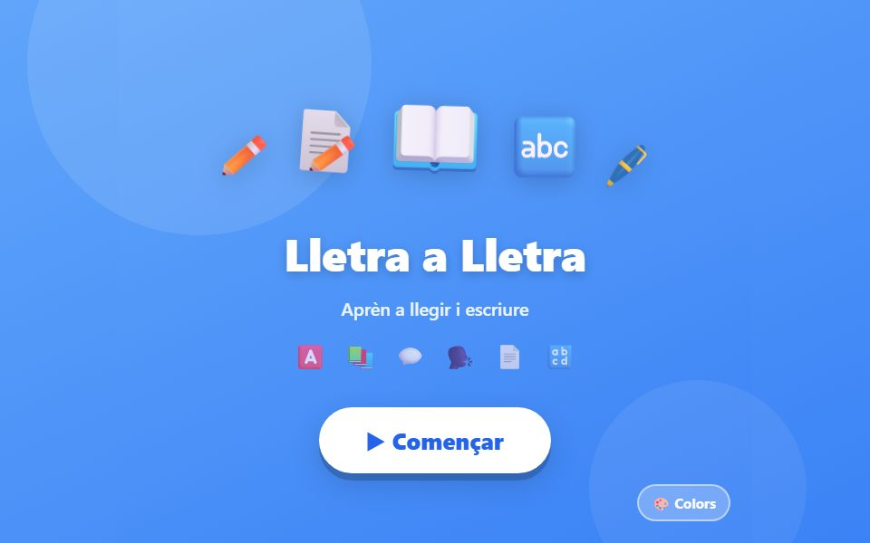
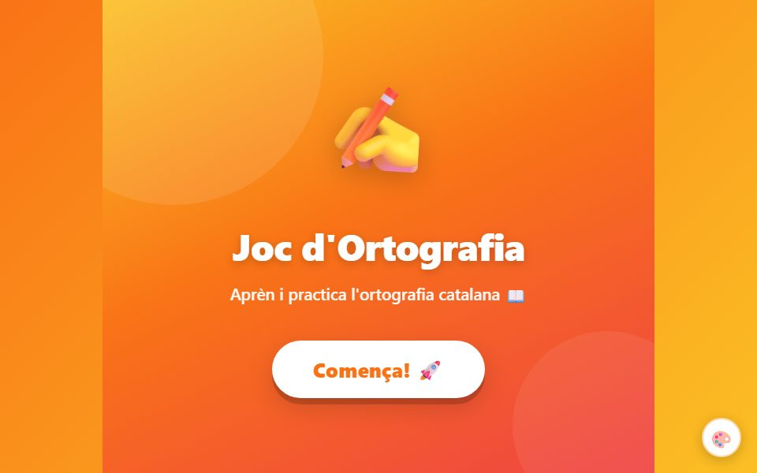
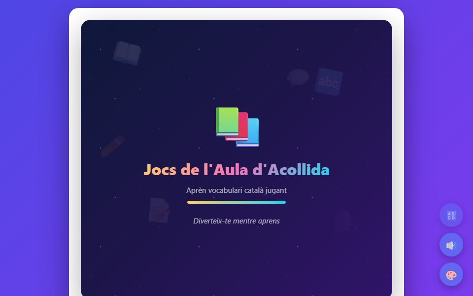
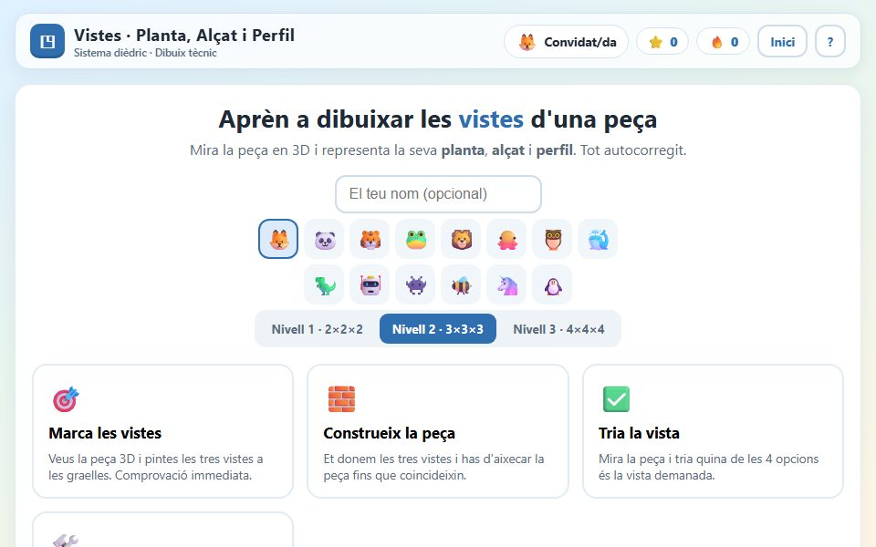
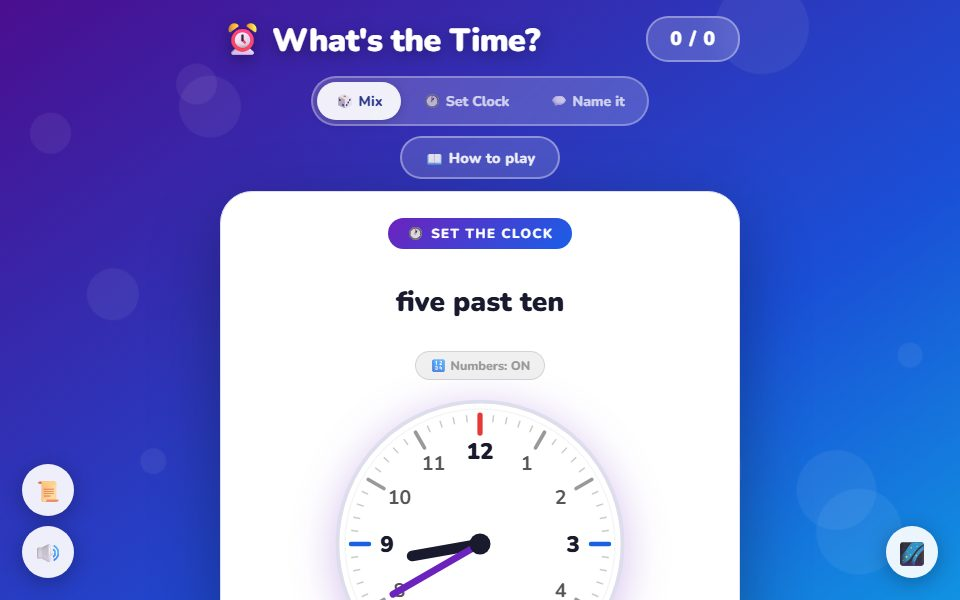

Professor de secundària · Creador de jocs educatius a mida per a l'aula
Sóc professor de secundària de Tecnologia i Digitalització a la Generalitat de Catalunya i des de fa temps dissenyo jocs i eines interactives per fer les classes més dinàmiques i properes als alumnes. Aquí trobaràs una selecció dels jocs que he desenvolupat per treballar matemàtiques, llengua, geometria i molt més — pensats per jugar-hi directament des del navegador, sense instal·lar res. Si el teu centre o editorial necessita un joc fet a mida, també puc ajudar-te a crear-lo.

Càlcul mental gamificat: missions i herois per practicar sumes, restes, multiplicacions i divisions.
Jugar ▶ 📱 Versió APK disponible sota petició
Set maneres de treballar el concepte de fracció i quatre modes per practicar les operacions.
Jugar ▶ 📱 Versió APK disponible sota petició
Repàs interactiu de figures geomètriques i les seves propietats.
Jugar ▶ 📱 Versió APK disponible sota petició
Practica la lectura de l'hora en rellotge analògic amb el sistema tradicional català de quarts.
Jugar ▶ 📱 Versió APK disponible sota petició
Joc de lectoescriptura: escoltar, completar, separar en síl·labes, associar i llegir paraules.
Jugar ▶ 📱 Versió APK disponible sota petició
Deu blocs temàtics per repassar l'ortografia catalana: la essa i la ce, les comes, i molt més.
Jugar ▶ 📱 Versió APK disponible sota petició
Vocabulari, lectura i jocs per a alumnat nouvingut, organitzats per unitats temàtiques amb progressió d'experiència.
Jugar ▶ 📱 Versió APK disponible sota petició
Pràctica de projeccions geomètriques: alçat, planta i perfil de figures en 3D.
Jugar ▶ 📱 Versió APK disponible sota petició
Practise telling the time in English on an analogue clock.
Jugar ▶ 📱 Versió APK disponible sota peticióM'expliques la idea, el nivell i l'objectiu didàctic.
Acordem mecàniques, continguts i termini.
Reps una primera versió jugable per provar i donar feedback.
Versió final llesta per a l'aula, web i/o APK.
Si ets un centre educatiu, un equip docent o una editorial i necessites un joc interactiu adaptat al teu currículum, idioma o estil visual, puc dissenyar-lo i desenvolupar-lo a mida — des de zero o partint d'algun dels jocs d'aquesta pàgina. Escriu-me i en parlem sense compromís.
✉️ Contacta'mO escriu directament a robertpotau@gmail.com si el teu correu no obre l'enllaç.
📄 Descarrega el portfolio en PDFCada joc neix d'una necessitat real d'aula i està pensat perquè l'alumnat aprengui jugant, sense instal·lar res. Si els jocs t'han estat útils a tu o al teu alumnat, pots convidar-me a un cafè — m'ajuda a seguir-ne creant i mantenint de nous.
☕ Ko-fi: robertpotau 🛒 Botiga (properament) — versió completa de cada joc📦 Tots els jocs d'aquesta pàgina són versions obertes i gratuïtes. En un futur, algunes versions completes o ampliades podran oferir-se de pagament a centres i editorials — les d'aquí es mantindran sempre com a demos jugables. 📱 La majoria de jocs també tenen versió Android (APK) disponible sota petició — contacta'm si la necessites.
🔒 Privacitat: cap joc d'aquesta pàgina envia dades a cap servidor. El progrés (perfils, XP, nivells) es desa només al navegador de l'alumne mitjançant localStorage.